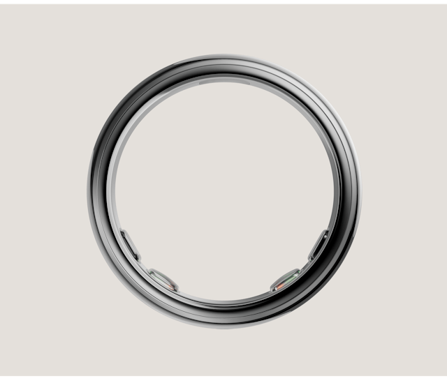

Oura Ring 5
Oura Ring 5 今天从预订窗口进入常规销售和首批发货。Oura 官方支持页明确写明，预订自 2026 年 5 月 28 日开始，常规销售和第一批发货从 2026 年 6 月 4 日开始。
- 为什么纳入：完整智能戒指硬件，今天有首批发货 / 常规销售节点，直接面向个人消费者。
- AI 与硬件能力：产品页称其支持 50+ 项健康指标、Oura Membership 中的 AI health companion，并以更薄的戒指形态提供连续健康数据。
- 关键规格：宽 6.09mm、厚 2.28mm、约 2g 起，续航约 6-9 天，支持 iOS / Android。
- 边界：5 月 28 日发布已经发生，本期只记录 6 月 4 日首批发货 / 常规销售节点。